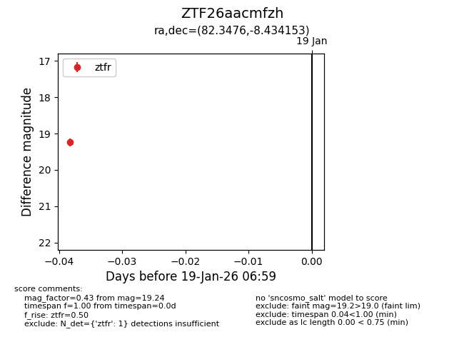
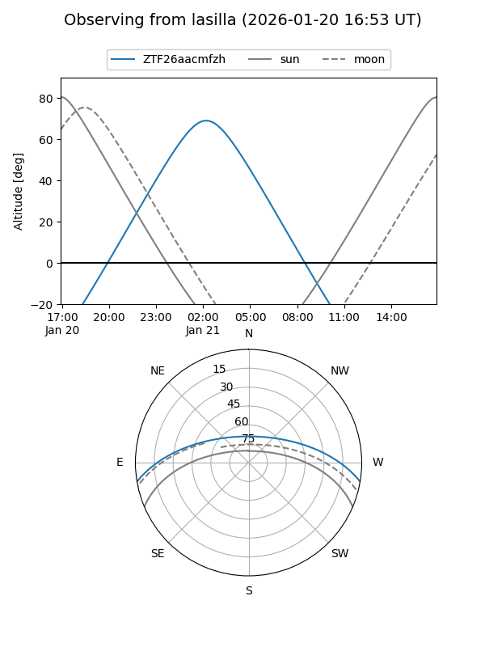
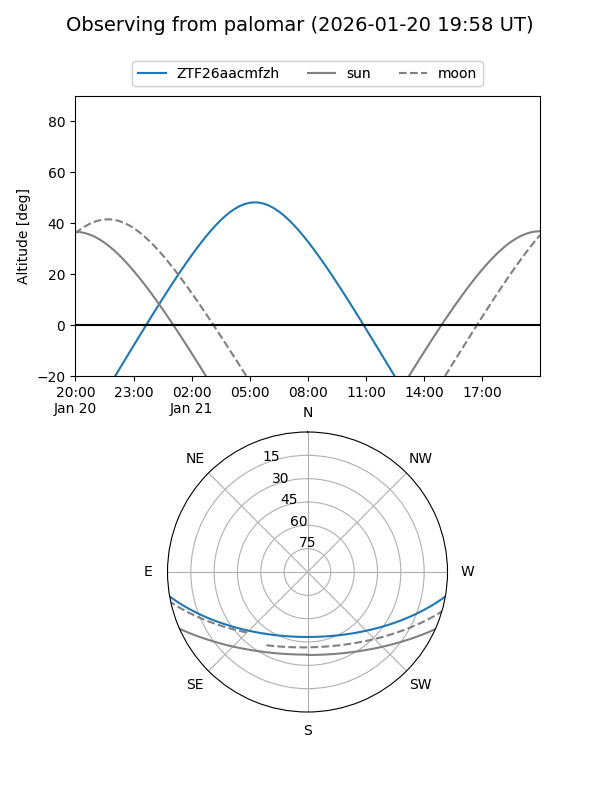

ZTF26aacmfzh
Target ZTF26aacmfzh at 2026-01-19 07:00
Aliases and brokers:
FINK: link
Lasair: link
ALeRCE: link
alt names
ZTF26aacmfzh (ztf,fink_ztf)
Coordinates:
equatorial (ra, dec) = 82.3476,-8.43415
equatorial (HMS+DMS) = 05:29:23.43,-08:26:02.95
galactic (l, b) = (211.2310,-22.04660)
Flags:
Photometry:
last ztfr=19.24
1 ztfr detections
Lightcurve

Visibility


Additional plots